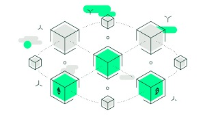

| Intro | Mechanism | Application | Cryptocurrency | Pros and Cons | Future Trend | MC Quiz | Reference |
|---|

Blockchain is a decentralized and distributed ledger technology while it is not just about cryptocurrency. It also be used in different sectors like finance, supply chains and healthcare.
In this project, we are going to explore and understand the operation mechanisms of blockchain, how it applies to real life and the implementation of transactions in cryptocurrency such as Bitcoin and Ethereum. We would also discuss how blockchain reshapes trust mechanisms and drives the future of digitalization.